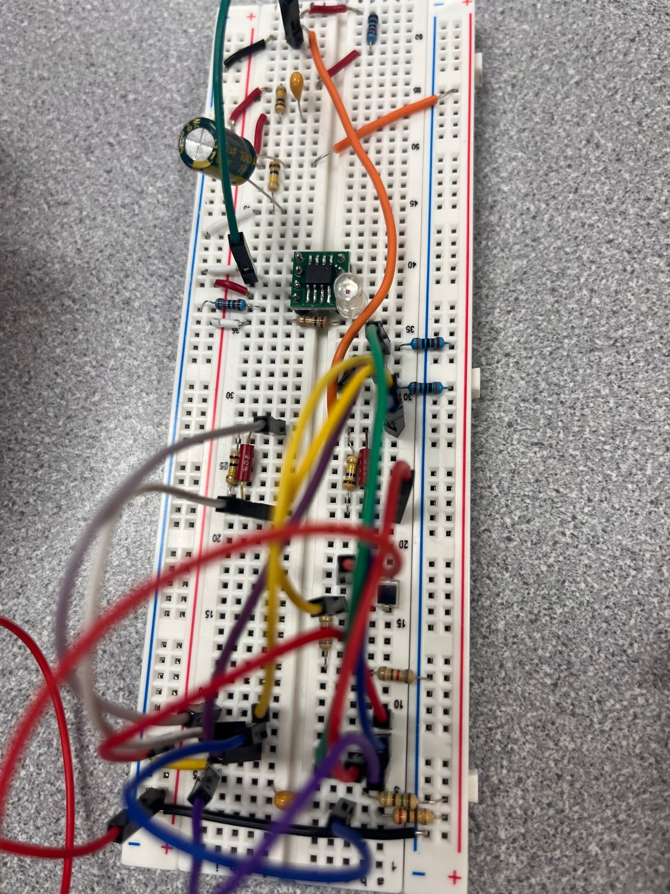

Hardware & AI Engineer
September 2026–present
Device onboarding, provisioning tools, and software that connects sensors with building models.
Electrical engineering · BYU · Provo, Utah
I like figuring out how things work—and building things that help people.
I’m Warren Ellsworth, an Electrical Engineering student at Brigham Young University with a Mathematics minor. My interests sit where embedded hardware, autonomous systems, and intelligent software meet.
My experience spans hands-on circuit and robotics projects, hardware deployment, AI software delivery, and technology commercialization. I enjoy turning ambiguous requirements into systems that can be built, tested, and explained.

01 / Professional introduction
I’m drawn to work where hardware, software, and real human needs meet. My direction is embedded systems, autonomy, and intelligent software—with enough time at the workbench to keep the engineering grounded.
From a sensor on a bench to the software that makes it useful.
At PassiveLogic, my work connects physical devices with building software. At Dynus, I deliver AI-enabled software around everyday business workflows. Earlier work in commercialization and venture diligence taught me to ask who a system serves, alongside how it works.
September 2026–present
Device onboarding, provisioning tools, and software that connects sensors with building models.
August 2026–present
Production software delivery for three clients across childcare, biotech, and medical diagnostics.
Electrical Engineering student
Hands-on coursework, alongside prior technology-transfer work evaluating and commercializing technical IP.
02 / Selected projects
Some live on a workbench. Others live on a screen. Each has taught me something about turning an idea into a useful system.
Explore my EC EN 340 notebook ↓
Independent project · Human-reviewed AI
Old handwritten records hold stories that are difficult to search. This project helps turn photographed German genealogy records into structured family data while keeping a person in charge of uncertain readings.
A macOS workflow combines Apple Vision OCR, AI extraction, source-linked review, and GEDCOM export. The illustrated queue shows comparing readings, saving a supported correction, and applying offline validation.
Working application · illustrative review screen
PassiveLogic · Connected devices
Getting a building’s devices online starts with a reliable gateway. I worked on provisioning tools to make that setup easier to check and recover when something goes wrong.
Kerlink commissioning used preflight checks, backups, rollback, and post-operation verification. A commissioning transaction was recorded as committed after verification.
Verified commissioning transaction
PassiveLogic · Hardware integration
I worked on onboarding a Zenner meter so its data could fit the equipment model used by the building’s software.
AI-assisted onboarding connected Quantum-compatible equipment modeling and IO drivers. Network join exchanges were observed; verified physical readings remain a separate milestone.
Integration work · physical readings not verified here
BYU EC EN 240 · Winter 2026
This robot brings sensing, motion, and code together: read the light around it, decide where to go, and drive toward it.
I integrated photodiodes, PWM, finite-state machines, DC and servo motors, and C/C++ control logic. Oscilloscope and serial-monitor debugging helped connect software decisions to physical behavior.
Built academic project
BYU EC EN 340 · Work in progress
Moving a design onto a PCB makes the practical details tangible: where components go, how they connect, and what needs to be tested next.
This is the newly ordered board for my course project. The photo shows the board at an early assembly stage; it does not establish completed assembly or electrical validation.
Newly ordered PCB · validation ahead
Circuit exploration · Breadboard
A breadboard makes an idea something I can inspect and change. This transmitter-chip circuit is part of that hands-on learning process.
The photograph documents the physical circuit. Component-level performance and final system validation are not claimed from the image alone.
Physical breadboard prototypeFrom my engineering notebook
Two artifacts from EC EN 340 — Electronic Circuit Design I. Source files, simulation evidence, and the story behind each design.

A Qucs-S design using an MCP6001 op amp, an input RC network, and parallel RC feedback. The saved AC sweep connects component choices to the circuit’s frequency response.
This is a high pass filter that I built using an op amp. You can see the AC response with the corner around 100 Hz. It is cool to see this signal working from a high pass to low pass perspective. I think it is interesting to work with op amps in simulations and then transfer them to real circuits and having them work in real life.

My final two-op-amp design for the laser tag receiver, shown in Qucs-S. The schematic brings together AC coupling, a shared bias reference, and resistor-capacitor feedback.
This is an image of a final design for my two op amps for the laser tag gun. It was interesting to go through the process of trial and error here. I tried many different configurations, I appreciated that we were given unclear documentation and not a lot of guidance. I was able to learn a lot by researching and trial and error.
The AC plot uses saved NGspice data. The receiver image shows my final two-op-amp schematic; the saved receiver waveform shows the all-source simulation.
Download both artifacts, datasets, and the op-amp model ↓A space for my reflection on what I’m learning through design, simulation, and testing.
I have learned throughout this class that perseverance and patience is what makes effective engineers. I have struggled through many problems and bugs this semester, and I have seen that the key is persistence -- trial and error. You have to keep trying different things, figuring out what the root cause is. The best way to debug is to always be learning.
Through the next part of the semester I plan to improve my process to be proactive about learning about things not just how they will kick things into the goal to get a good grade but where I apply what I am learning to the workforce. Be ready to take detours to learn the valuable things I don't normally learn.
I build at the intersection of circuits, embedded hardware, and intelligent software. This is a collection of my designs, experiments, and lessons along the way.
Integrated photodiodes, PWM, finite-state machines, DC and servo motors, and C/C++ control software for autonomous navigation and light-following behavior.
Debugged hardware and software interfaces with an oscilloscope and serial monitor. Iterative testing isolated a capacitive-touch PWM failure to circuit grounding.
Embedded C for image capture, filtering, storage, event-driven controls, and hardware interfacing on a Raspberry Pi Zero / Arduino-based system.
Implemented packetized image transmission, grayscale conversion, color-channel manipulation, and digital filtering while integrating camera, power, inputs, and wireless connectivity.
At PassiveLogic, I work across LoRaWAN device onboarding, payload decoding, provisioning, and the connection between physical sensors and digital building models.
Diagnose deployment issues across RF, gateways, MQTT, gRPC, and Swift services. Build automation tooling for commissioning fleets of meters and environmental sensors.
A macOS application that turns photographed German genealogy records into structured family data and GEDCOM exports, with source-linked human review.
Integrated local Apple Vision OCR with AI extraction, image verification, and targeted correction workflows. Built support for relationships, historical events, citations, and page continuations.
As founder of Dynus, I design and deliver full-stack software connecting business workflows, structured data, automation, and AI-assisted interfaces.
Built React/TypeScript applications with relational data, authentication, serverless APIs, client portals, and integrations. Engineering priorities include authorization, input validation, provider fallbacks, testing, and reliable core workflows.
Designed and fabricated a high-voltage deionization test fixture using CAD, 3D printing, machined plates, insulation, pumps, and tubing.
Varied flow rate and measured conductivity. Testing found no significant salinity reduction — an experimental result that helped evaluate the feasibility of the proposed separation method.